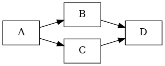

siiky 2022/08/04 2022/08/04
Started reading "The Application of Petri Nets to Workflow Management", by W.M.P. van der Aalst last Friday and finished today. You need paid access to download the PDF but I can send it to you in case you're interested, just contact me.
As the title suggests the paper is not about programming but workflow management. Specifically, it's about how the processes executed in a company's context can be modeled by Petri nets, and reasons why that is a good thing. A recurrent example was that of an insurance/complaints company, where customers may submit complaints and the company processes them to decide whether the customer is right or not.
The definition wasn't too different from the Statebox one (see log #001), but lots of interesting little things are discussed in the paper that can also be applied to programming, and specifically a Petri nets programming language implementation (that I'm gonna call "execution environment").
Resources are the entities that execute an enabled transition. In the context of the insurance company, a transition may be "reviewing a complaint form", and the person that does the review is the resource (don't squint too hard on the terminology). In the context of programming, a transition is a piece of code, and the resource that executes it may be a number of different things! In a strictly sequential execution environment, the resource is some CPU time of the process; in a parallel execution environment it could be some CPU time of an OS thread; but it could also be a whole green thread (read: Erlang (BEAM) process).
In the last case, I can think of at least two alternatives (using BEAM to make things more concrete): either there is a specific process for each transition, which executes only that specific transition when it is enabled; or a process is spawned each time a transition is fired, letting even the same transition execute concurrently (as long as both can fire, of course; e.g., they fire sequentially but execute in parallel).
Thus, an execution environment must either make decisions about the execution semantics and force these semantics down the throats of the programmers; or it must give the programmers the tools to choose the semantics they think fit their problems best.
The former is basically the case for ALL programming languages, which I can easily understand. It's difficult enough to write a good implementation let alone several good implementations that may be used based on configurations or whatnot, possibly changed at runtime.
Something that isn't mentioned in the Statebox monograph is different "routing" types. The WF-nets paper mentions four distinct types but I believe there are technically only two of them.
The four types are (a) sequential, (b) parallel, (c) conditional, and (d) iterative. Next follow my own representations of Fig. 3, as close to the real ones as I can (they don't indeed have places represented, only transitions).

There's nothing to say about sequential routing. There's nothing much to say about parallel routing (the output of a transition is fed into two other transitions). And there's nothing to say about iterative routing either -- the image didn't come so well but notice that the result of B is fed back into B. All three of these are essentially the parallel routing, and there's nothing in the Statebox definition preventing any of these cases.
Conditional routing is the new guy here. In conditional routing either B or C fire after A firing, but not both! Unless I completely missed it in the Statebox monograph, there's no concept of conditionally sending tokens to this or that place. All transitions must always put their multiplicity of tokens in the destination places. In retrospect, I remember seeing some example model (the smart contract gambling one) where a transition could either succeed or fail, which had two "success" and "failure" transitions after it, and wondering why that choice wasn't represented. See the "Fail" and "Pass" coming after "OracleCallback" in the following image.
Now I'm wondering how/if Statebox plan to tackle this.
Additionally two different kinds of conditional routing are presented in the WF-nets paper, but I haven't transcribed and compiled all of my notes yet so this is it for now.